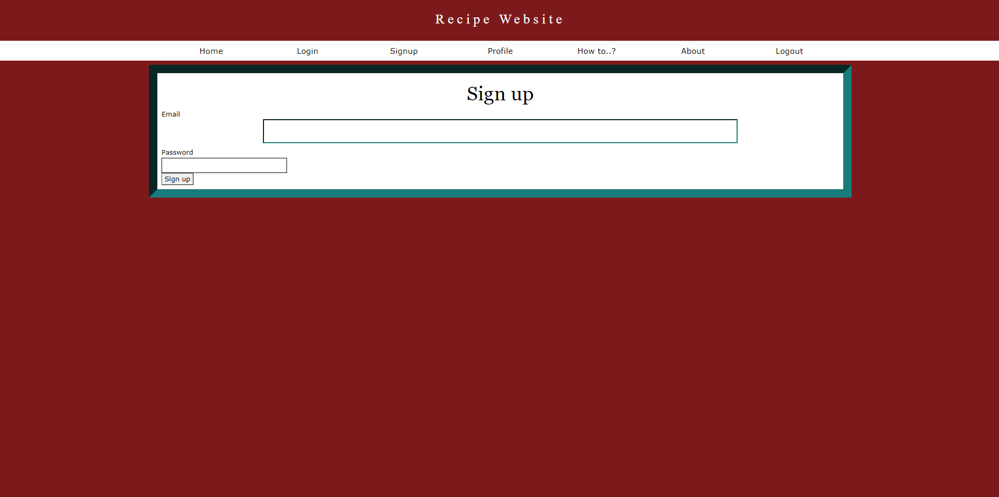
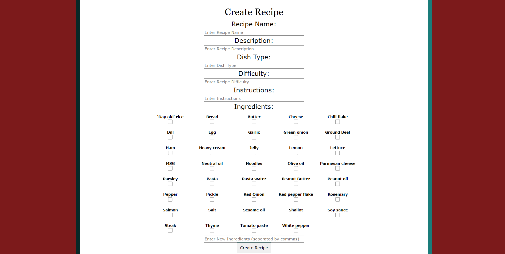

Are you struggling to decide on what to cook for dinner tonight? Or maybe you want to share a new recipe of yours? Well the Recipe Website is what you're looking for! This is the official release for version 1.0 so here we will be going over all of the features and what to expect when using the website yourself!
This is the star of the show! Located on the home page, you'll be able to select ingredients, and view the recipes that you have the best match with.

Depending on how well the ingredients you select match witht the reciepes, you'll be given colors and a percentage to show your best matches!
If you decide to create an account you will gain access to a whole suite of features.
Once your account has been created, you can view it on the profile tab. This is where you can add a personal bio, and see all of your recipes!e
Last but not least, if you decide that you would like to contribute to the websites recipes, on the create a recipe page, you can input your own personal recipes for others to view and make!
